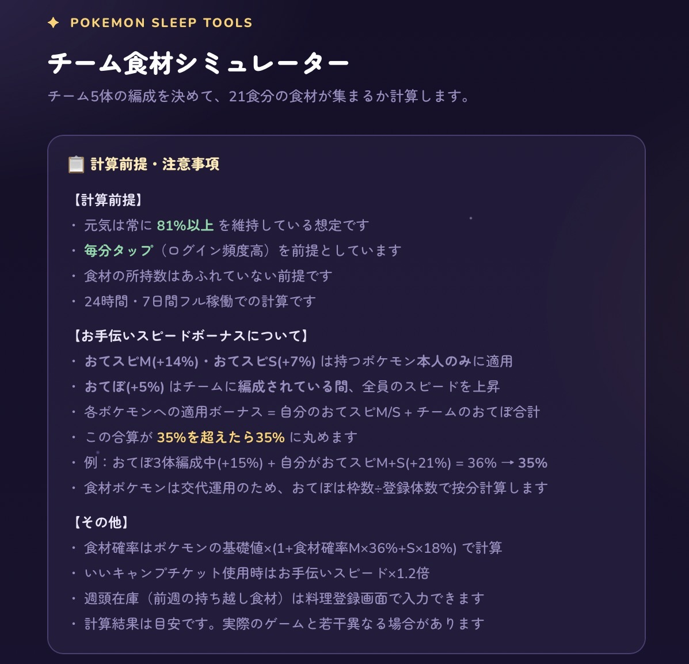
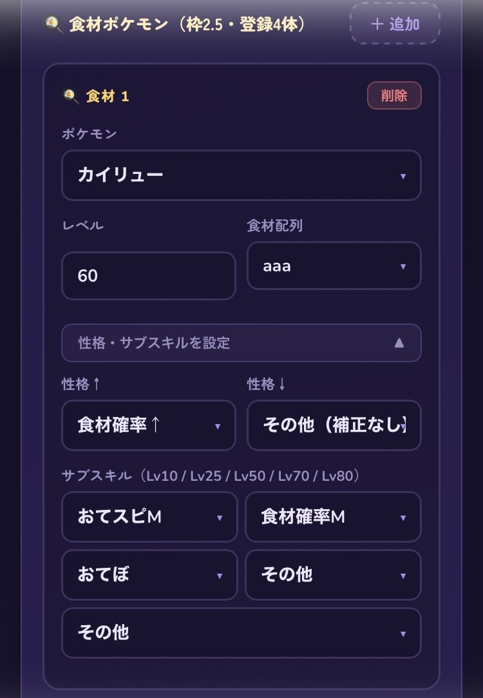
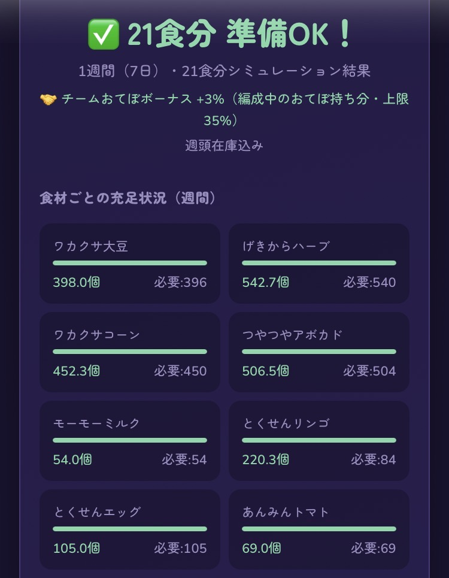
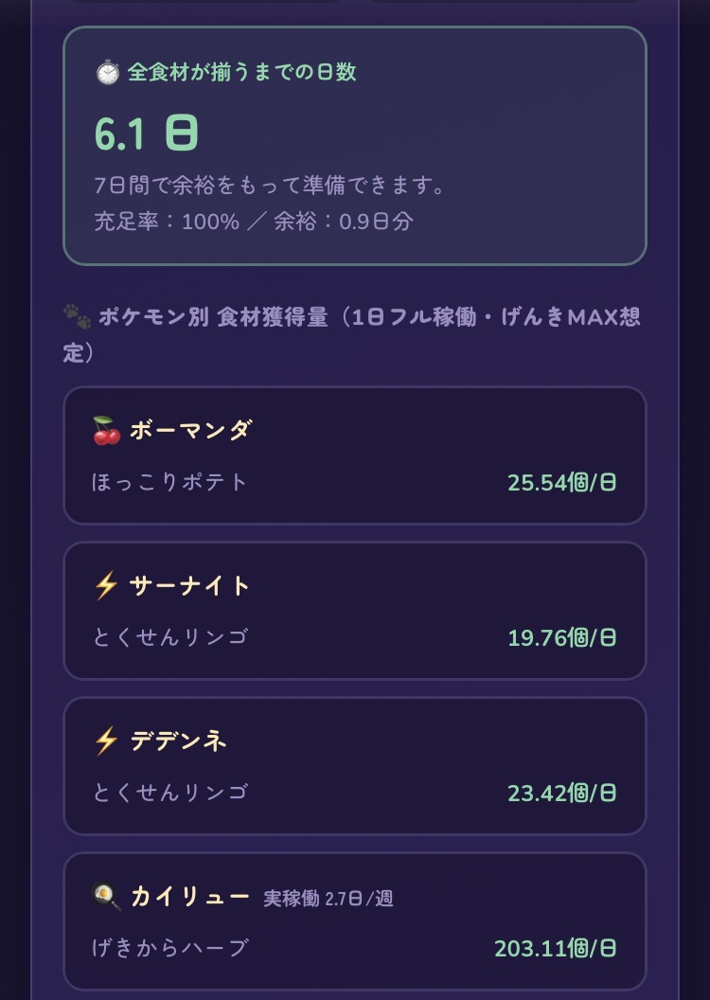

チーム食材シミュレーター
ツールガイド
食材ポケモンの厳選判断を定量化する。
チーム編成・目標料理・手持ちポケモンを入力して、
週21食を作り続けられるかシミュレートします。
① 開発背景および目的
これまで食材ポケモンの厳選基準は「AAA食材確率M」と言われてきました。 しかし、現在のポケモンスリープ環境ではこの基準だけでは不十分になっています。
- 目標とする料理がどんどん大型化している
- 無課金／プレパス勢／微課金勢でプレイスタイルが大きく異なる
- 食材タイプを何体編成するかで必要量が変わる
- レベル70サブスキル解放という環境変化
こうした要素によって、プレイヤーごとに必要な食材量や厳選ラインが 大きく変わるようになりました。にもかかわらず、これらを 「定量的に判断できるツール」が存在していませんでした。
そこで今回、チームに何体食材タイプを入れるか、目標料理、 自分の手持ちポケモンのサブスキルなどを入力することで、 「料理を1週間作り続けられるか」を評価できるツールを作成しました。

- 4種類の食材が必要な料理で、3種類が厳選済みの場合
→ 最後の1体はどのサブスキルならクリアできるかを調べる - 余剰食材を見て、他に作れる料理がないか逆算する
- レベル70サブスキルを解放した場合、どれだけ改善するかを確認する
皆さんのポケスリライフがより有意義なものになることを願っています。
② 使用方法
きのみ、食材、スキルタイプを何体編成するかを入力します。

ボーマンダとサーナイトは常時編成。食材タイプは常時2体。
デデンネが2回スキル発動したら食材にチェンジする場合は、
きのみ1、食材2.5、スキル1.5 と入力します。
使用するポケモン名を選択し、レベル・サブスキル・性格・食材配列を登録します。

- きのみ・スキルタイプは登録ポケモンを7日間使用し続ける前提で計算
- 50%稼働表記のポケモンは3.5日間で計算
- これらのポケモンが回収する食材が目標料理に含まれる場合は「使用する前提」でシミュレート
- 食材タイプのポケモンは枠内で交換しながら必要な食材を収集
目標料理を登録してください。複数料理を設定可能ですが、合計21食になるように設定してください。

週末に食材を持ち越した状態でシミュレーションすることもできます。持ち越す食材がある場合は、週頭在庫欄に登録してください。

計算結果が出力されます。

